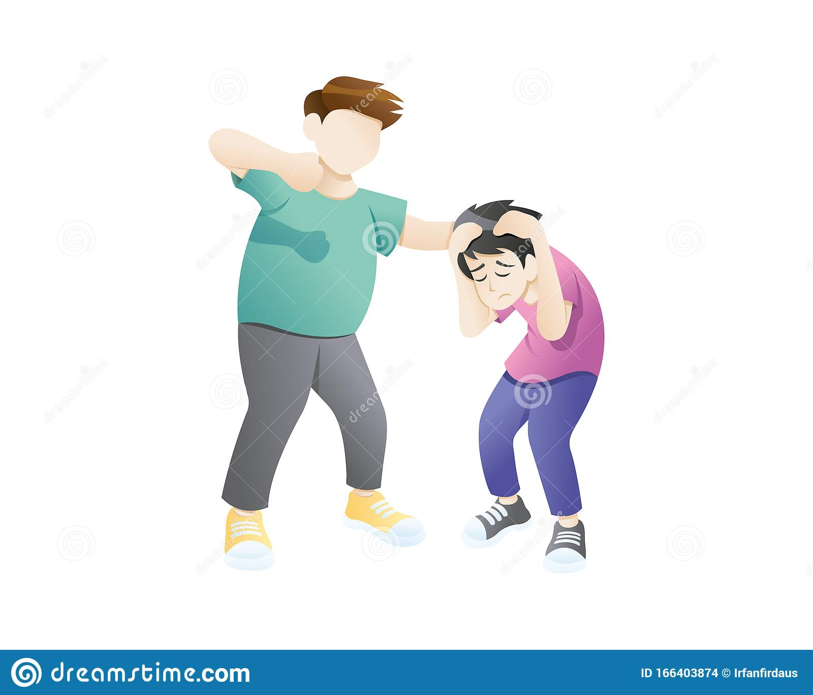
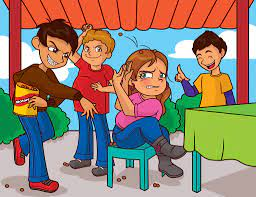

Tipos de bullyng
Corresponde a la cualquier contacto que haya entre el agresor, los testigos y la víctima, sin el consentimiento de esta última persona. Generalmente cuando se habla de bullying físico, se tiende a pensar que sólo son golpes fuertes, palizas, etc. sin embargo, este tipo de agresión puede ir desde un simple empujón o manoseo, hasta los ejemplos dados anteriormente.
También conocido como bullying psicológico, es una de las formas de bullying más complejas de detectar, ya que tiende a ser manifestado a espaldas de la víctima dado que su objetivo es menoscabar a una persona, evitando que se integre a algún grupo. Esta “no integración” de la víctima suele ser detectada cuando se ha naturalizado el aislamiento dentro del curso.
Corresponde a la cualquier contacto que haya entre el agresor, los testigos y la víctima, sin el consentimiento de esta última persona. Generalmente cuando se habla de bullying físico, se tiende a pensar que sólo son golpes fuertes, palizas, etc. sin embargo, este tipo de agresión puede ir desde un simple empujón o manoseo, hasta los ejemplos dados anteriormente.
Esta es una forma de acoso que nació con las tecnologías 2.0 y permite que el hostigamiento verbal esté presente en más de un área de la vida de la víctima. Así es como los mensajes de Whastapp, publicaciones en Facebook e Instagram y hasta correos electrónicos, son utilizados para que la víctima esté constantemente recordando el acoso.